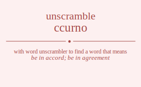

The word found after unscrambling ccurno means that be in accord; be in agreement, happen simultaneously, .
Wordscapes Daily Puzzle Answers for 11/06/2019
con , nor , our , run , urn , corn , occur , concur

The word found after unscrambling ccurno means that be in accord; be in agreement, happen simultaneously, .
Wordscapes Daily Puzzle Answers for 11/06/2019
con , nor , our , run , urn , corn , occur , concur
You can also find solutions for different combinations of letters in ccurno like ccurno ccuron ccunro ccunor ccuorn ccuonr ccruno ccruon ccrnuo ccrnou ccroun ccronu ccnuro ccnuor ccnruo ccnrou ccnour ccnoru ccourn ccounr ccorun ccornu cconur cconru cucrno cucron cucnro cucnor cucorn cuconr curcno curcon curnco curnoc curocn curonc cuncro cuncor cunrco cunroc cunocr cunorc cuocrn cuocnr cuorcn cuornc cuoncr cuonrc crcuno crcuon crcnuo crcnou crcoun crconu crucno crucon crunco crunoc cruocn cruonc crncuo crncou crnuco crnuoc crnocu crnouc crocun crocnu croucn crounc croncu cronuc cncuro cncuor cncruo cncrou cncour cncoru cnucro cnucor cnurco cnuroc cnuocr cnuorc cnrcuo cnrcou cnruco cnruoc cnrocu cnrouc cnocur cnocru cnoucr cnourc cnorcu cnoruc cocurn cocunr cocrun cocrnu cocnur cocnru coucrn coucnr courcn cournc councr counrc corcun corcnu corucn corunc corncu cornuc concur concru conucr conurc conrcu conruc ccurno ccuron ccunro ccunor ccuorn ccuonr ccruno ccruon ccrnuo ccrnou ccroun ccronu ccnuro ccnuor ccnruo ccnrou ccnour ccnoru ccourn ccounr ccorun ccornu cconur cconru cucrno cucron cucnro cucnor cucorn cuconr curcno curcon curnco curnoc curocn curonc cuncro cuncor cunrco cunroc cunocr cunorc cuocrn cuocnr cuorcn cuornc cuoncr cuonrc crcuno crcuon crcnuo crcnou crcoun crconu crucno crucon crunco crunoc cruocn cruonc crncuo crncou crnuco crnuoc crnocu crnouc crocun crocnu croucn crounc croncu cronuc cncuro cncuor cncruo cncrou cncour cncoru cnucro cnucor cnurco cnuroc cnuocr cnuorc cnrcuo cnrcou cnruco cnruoc cnrocu cnrouc cnocur cnocru cnoucr cnourc cnorcu cnoruc cocurn cocunr cocrun cocrnu cocnur cocnru coucrn coucnr courcn cournc councr counrc corcun corcnu corucn corunc corncu cornuc concur concru conucr conurc conrcu conruc uccrno uccron uccnro uccnor uccorn ucconr ucrcno ucrcon ucrnco ucrnoc ucrocn ucronc ucncro ucncor ucnrco ucnroc ucnocr ucnorc ucocrn ucocnr ucorcn ucornc uconcr uconrc uccrno uccron uccnro uccnor uccorn ucconr ucrcno ucrcon ucrnco ucrnoc ucrocn ucronc ucncro ucncor ucnrco ucnroc ucnocr ucnorc ucocrn ucocnr ucorcn ucornc uconcr uconrc urccno urccon urcnco urcnoc urcocn urconc urccno urccon urcnco urcnoc urcocn urconc urncco urncoc urncco urncoc urnocc urnocc uroccn urocnc uroccn urocnc uroncc uroncc unccro unccor uncrco uncroc uncocr uncorc unccro unccor uncrco uncroc uncocr uncorc unrcco unrcoc unrcco unrcoc unrocc unrocc unoccr unocrc unoccr unocrc unorcc unorcc uoccrn uoccnr uocrcn uocrnc uocncr uocnrc uoccrn uoccnr uocrcn uocrnc uocncr uocnrc uorccn uorcnc uorccn uorcnc uorncc uorncc uonccr uoncrc uonccr uoncrc uonrcc uonrcc rccuno rccuon rccnuo rccnou rccoun rcconu rcucno rcucon rcunco rcunoc rcuocn rcuonc rcncuo rcncou rcnuco rcnuoc rcnocu rcnouc rcocun rcocnu rcoucn rcounc rconcu rconuc rccuno rccuon rccnuo rccnou rccoun rcconu rcucno rcucon rcunco rcunoc rcuocn rcuonc rcncuo rcncou rcnuco rcnuoc rcnocu rcnouc rcocun rcocnu rcoucn rcounc rconcu rconuc ruccno ruccon rucnco rucnoc rucocn ruconc ruccno ruccon rucnco rucnoc rucocn ruconc runcco runcoc runcco runcoc runocc runocc ruoccn ruocnc ruoccn ruocnc ruoncc ruoncc rnccuo rnccou rncuco rncuoc rncocu rncouc rnccuo rnccou rncuco rncuoc rncocu rncouc rnucco rnucoc rnucco rnucoc rnuocc rnuocc rnoccu rnocuc rnoccu rnocuc rnoucc rnoucc roccun roccnu rocucn rocunc rocncu rocnuc roccun roccnu rocucn rocunc rocncu rocnuc rouccn roucnc rouccn roucnc rouncc rouncc ronccu roncuc ronccu roncuc ronucc ronucc nccuro nccuor nccruo nccrou nccour nccoru ncucro ncucor ncurco ncuroc ncuocr ncuorc ncrcuo ncrcou ncruco ncruoc ncrocu ncrouc ncocur ncocru ncoucr ncourc ncorcu ncoruc nccuro nccuor nccruo nccrou nccour nccoru ncucro ncucor ncurco ncuroc ncuocr ncuorc ncrcuo ncrcou ncruco ncruoc ncrocu ncrouc ncocur ncocru ncoucr ncourc ncorcu ncoruc nuccro nuccor nucrco nucroc nucocr nucorc nuccro nuccor nucrco nucroc nucocr nucorc nurcco nurcoc nurcco nurcoc nurocc nurocc nuoccr nuocrc nuoccr nuocrc nuorcc nuorcc nrccuo nrccou nrcuco nrcuoc nrcocu nrcouc nrccuo nrccou nrcuco nrcuoc nrcocu nrcouc nrucco nrucoc nrucco nrucoc nruocc nruocc nroccu nrocuc nroccu nrocuc nroucc nroucc noccur noccru nocucr nocurc nocrcu nocruc noccur noccru nocucr nocurc nocrcu nocruc nouccr noucrc nouccr noucrc nourcc nourcc norccu norcuc norccu norcuc norucc norucc occurn occunr occrun occrnu occnur occnru ocucrn ocucnr ocurcn ocurnc ocuncr ocunrc ocrcun ocrcnu ocrucn ocrunc ocrncu ocrnuc ocncur ocncru ocnucr ocnurc ocnrcu ocnruc occurn occunr occrun occrnu occnur occnru ocucrn ocucnr ocurcn ocurnc ocuncr ocunrc ocrcun ocrcnu ocrucn ocrunc ocrncu ocrnuc ocncur ocncru ocnucr ocnurc ocnrcu ocnruc ouccrn ouccnr oucrcn oucrnc oucncr oucnrc ouccrn ouccnr oucrcn oucrnc oucncr oucnrc ourccn ourcnc ourccn ourcnc ourncc ourncc ounccr ouncrc ounccr ouncrc ounrcc ounrcc orccun orccnu orcucn orcunc orcncu orcnuc orccun orccnu orcucn orcunc orcncu orcnuc oruccn orucnc oruccn orucnc oruncc oruncc ornccu orncuc ornccu orncuc ornucc ornucc onccur onccru oncucr oncurc oncrcu oncruc onccur onccru oncucr oncurc oncrcu oncruc onuccr onucrc onuccr onucrc onurcc onurcc onrccu onrcuc onrccu onrcuc onrucc onrucc.
Unscramble Words is registered trademark.